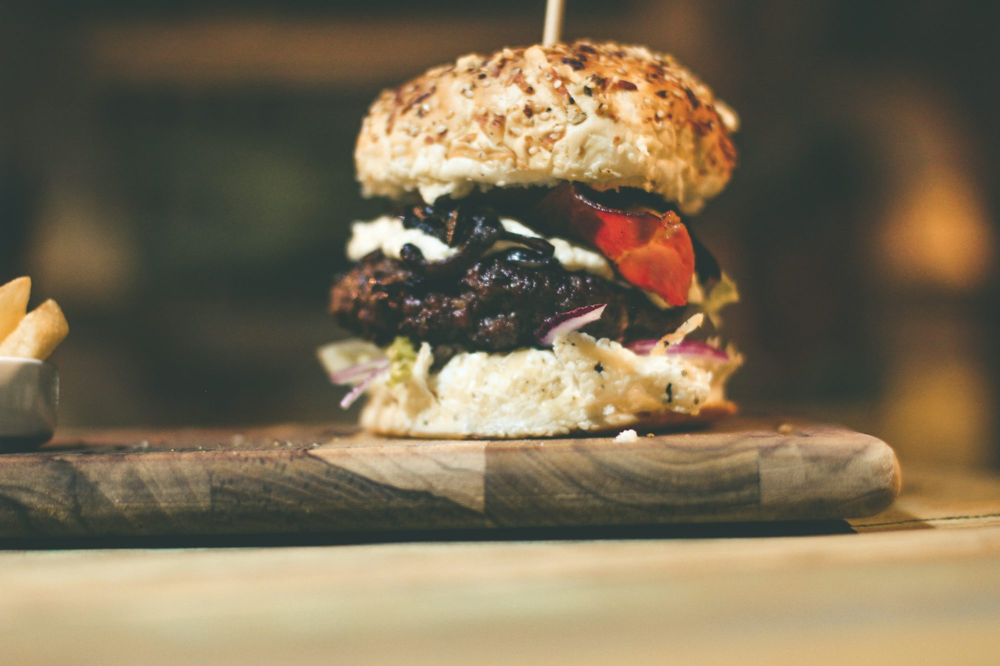

Burgers Unleashed: A Culinary Exploration of Flavor and Innovation
Dive into the world of burgers, where traditional recipes meet innovative techniques and unique flavors, transforming the classic dish into a gourmet experience.At its core, the burger is a versatile platform that invites experimentation. Traditionally, it features a beef patty served on a bun with a selection of toppings. However, today’s burger enthusiasts are embracing a wide range of proteins, expanding the definition of what a burger can be. Ground turkey, lamb, chicken, and even seafood patties are making their way onto menus, providing diverse options for those seeking alternatives to classic beef. The rise of plant-based proteins, such as Beyond Meat and Impossible Foods, has further transformed the landscape, offering delicious, sustainable choices for vegetarians and vegans without sacrificing flavor.
Toppings play a crucial role in elevating the burger experience. Chefs are increasingly using gourmet ingredients to create unique flavor profiles that tantalize the palate. Imagine a burger topped with creamy goat cheese, roasted beets, and a drizzle of balsamic reduction. Such combinations not only enhance the taste but also introduce a sophisticated twist to a familiar dish. The creative use of toppings extends to international influences, with flavors inspired by global cuisines. A Mexican-inspired burger might feature spicy jalapeños, guacamole, and chipotle mayo, while an Asian twist could include teriyaki sauce, pickled vegetables, and a slice of pineapple.
The bun, often overlooked, has also undergone a transformation. While classic sesame seed buns remain popular, many restaurants are opting for artisanal bread varieties, such as brioche, pretzel, or even ciabatta. These alternatives not only offer distinctive flavors but also improve the overall texture of the burger. Gluten-free options, such as lettuce wraps or portobello mushroom caps, cater to those with dietary restrictions, showcasing the adaptability of this iconic dish.
Sauces have become another area of innovation, allowing for an explosion of flavor that can completely change the character of a burger. Gone are the days when ketchup and mustard reigned supreme. Today, you can find an array of sauces, from spicy sriracha mayo to tangy avocado crema. Many chefs experiment with homemade sauces, blending various ingredients to create signature flavors that complement their burgers. This emphasis on sauce variety invites diners to explore and personalize their meals, making each burger experience unique.
Seasonality is a key consideration in modern burger creation, with many chefs prioritizing fresh, local ingredients. Seasonal vegetables, herbs, and fruits can bring new life to a burger, making it a reflection of the time of year. A summer burger might feature juicy heirloom tomatoes, fresh basil, and a hint of pesto, while a winter variant could incorporate roasted root vegetables and savory sage aioli. This connection to local agriculture not only supports community farmers but also enhances the dining experience by celebrating the flavors of each season.
The impact of cooking techniques cannot be overlooked. Advances in culinary technology have opened up new possibilities for preparing burgers. Sous-vide cooking allows for precise temperature control, ensuring that each patty is cooked to perfection and remains juicy. Smoking or grilling over hardwood enhances the flavor profile, adding depth and complexity. These techniques showcase the skill and creativity of chefs, allowing them to elevate the burger from a simple meal to a culinary masterpiece.
In addition to professional kitchens, the trend of burger innovation has found a place in home cooking. Enthusiastic home cooks are experimenting with flavors and ingredients, creating their own unique burgers. By incorporating spices, herbs, and specialty ingredients, anyone can craft a burger that reflects their personal tastes. This freedom to innovate encourages creativity in the kitchen and makes cooking a fun and engaging activity for families and friends.
The emergence of burger festivals and competitions highlights the popularity of this dish and the creative talent behind it. These events bring together chefs from various backgrounds to showcase their unique burger creations, often with a playful twist. Attendees have the opportunity to sample a variety of flavors, celebrate local food culture, and discover new culinary trends. Such gatherings foster a sense of community and inspire future burger innovations.
As we explore the future of burgers, the potential for further innovation is immense. With growing awareness of sustainability, we may see an increase in plant-based burgers that utilize innovative ingredients to mimic the taste and texture of meat. Technology will continue to play a significant role, from improved cooking techniques to new flavor-enhancing tools. As chefs and home cooks alike embrace these trends, the burger will undoubtedly continue to evolve, ensuring its place as a beloved staple in the culinary world.
In conclusion, the burger has transformed into a versatile and exciting dish that embodies creativity, flavor, and innovation. From diverse proteins and gourmet toppings to seasonal ingredients and global influences, the modern burger experience offers something for everyone. Whether enjoyed at a local burger joint, a food festival, or cooked at home, each bite represents a journey through flavor and imagination. As the burger continues to adapt and evolve, it remains a symbol of culinary exploration and a cherished favorite among food lovers everywhere.